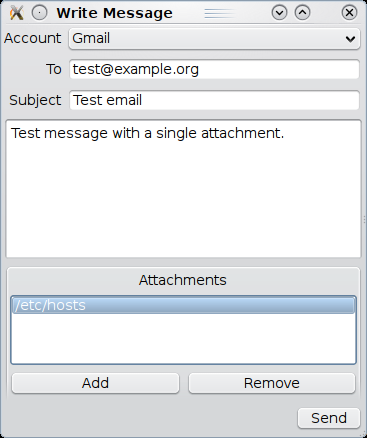

|
Home · All Classes · All Functions · | |
Files:
This example demonstrates using the Qt Mobility Messaging API to create and send a simple message.

The writemessage application provides an interface allowing the user to compose a simple message and send that message to one or more recipients. The type of message that is sent will depend on the messaging account that the user selects for transmission.
In order to know what type of message to create, our application requires that the user select an account to transmit with. We create a listing to present the user a choice, by populating a combo box with the names of the available accounts:
// Find the list of available accounts and add them to combo box foreach (const QMessageAccountId &id, manager.queryAccounts()) { QMessageAccount account(id); // What is the most capable message type supported by this account? QMessage::Type type(QMessage::NoType); if (account.messageTypes() & QMessage::Email) { type = QMessage::Email; } else if (account.messageTypes() & QMessage::Mms) { type = QMessage::Mms; } else if (account.messageTypes() & QMessage::Sms) { type = QMessage::Sms; } if (type != QMessage::NoType) { QString name(account.name()); accountDetails.insert(name, qMakePair(type, account.id())); accountCombo->addItem(name); } }
We create a mapping of the account name to the most capable type of message that can be transmitted via that account. When an account is selected, we will adjust our UI to disable the message elements that cannot be transmitted using the associated message type. For example, an SMS message cannot transmit attachments or a subject line.
void MessageSender::accountSelected(int index)
{
QString name(accountCombo->itemText(index));
if (!name.isEmpty()) {
QPair<QMessage::Type, QMessageAccountId> details = accountDetails[name];
// Enable subject only for email
subjectEdit->setEnabled(details.first == QMessage::Email);
// Disable attachments for SMS
const bool smsOnly(details.first == QMessage::Sms);
addButton->setEnabled(!smsOnly);
removeButton->setEnabled(!smsOnly);
}
}
When the user presses the Send button, we create a message that contains the information they have provided. First of all, we create a message object to transmit, and associate it with the account and message type that correspond to the user's account selection:
QString accountName(accountCombo->currentText());
if (accountName.isEmpty()) {
QMessageBox::warning(0, tr("Missing information"), tr("No account is selected for transmission"));
return;
}
QMessage message;
QPair<QMessage::Type, QMessageAccountId> details = accountDetails[accountName];
message.setType(details.first);
message.setParentAccountId(details.second);
Next, we process the recipient address or addresses that were provided. For each whitespace-separated element, we create an address object that has that element as the recipient, with the address type determined by the type of message we are constructing.
QString to(toEdit->text());
if (to.isEmpty()) {
QMessageBox::warning(0, tr("Missing information"), tr("Please enter a recipient address"));
return;
}
// Find the address type to use for this message
QMessageAddress::Type addrType(message.type() == QMessage::Email ? QMessageAddress::Email : QMessageAddress::Phone);
QMessageAddressList toList;
foreach (const QString &item, to.split(QRegExp("\\s"), QString::SkipEmptyParts)) {
toList.append(QMessageAddress(addrType, item));
}
message.setTo(toList);
Next, we set the subject of the message (if the message can contain a subject) and set the text of the message.
if (message.type() == QMessage::Email) {
QString subject(subjectEdit->text());
if (subject.isEmpty()) {
QMessageBox::warning(0, tr("Missing information"), tr("Please enter a subject"));
return;
}
message.setSubject(subject);
}
QString text(textEdit->toPlainText());
if (text.isEmpty()) {
QMessageBox::warning(0, tr("Missing information"), tr("Please enter a message"));
return;
}
message.setBody(text);
If the message can contain attachments, we add them as a list of file paths to be appended to the message:
if (message.type() != QMessage::Sms) {
if (attachmentsList->count()) {
QStringList paths;
for (int i = 0; i < attachmentsList->count(); ++i) {
paths.append(attachmentsList->item(i)->text());
}
message.appendAttachments(paths);
}
}
Now that we have created our message, we use the QMessageService::send() operation to request that the message be stored in the system and transmitted:
sendButton->setEnabled(false);
if (service.send(message)) {
sendId = message.id();
} else {
sendButton->setEnabled(true);
QMessageBox::warning(0, tr("Failed"), tr("Unable to send message"));
}
To determine whether our transmission is successful, we wait for changes to the state of the QMessageService object. When the state changes to the FinishedState, we need to check whether the request was successful or not:
void MessageSender::stateChanged(QMessageService::State newState)
{
if (newState == QMessageService::FinishedState) {
if (service.error() == QMessageManager::NoError) {
QMessageBox::information(0, tr("Success"), tr("Message sent successfully"));
} else {
QMessageBox::warning(0, tr("Failed"), tr("Unable to send message"));
// Try to delete the failed message
if (!manager.removeMessage(sendId)) {
qWarning() << "Unable to remove failed message:" << sendId.toString();
}
}
sendId = QMessageId();
sendButton->setEnabled(true);
}
}
| Copyright © 2009 Nokia Corporation and/or its subsidiary(-ies) | Trademarks | Qt Mobility Project 1.0.0 |